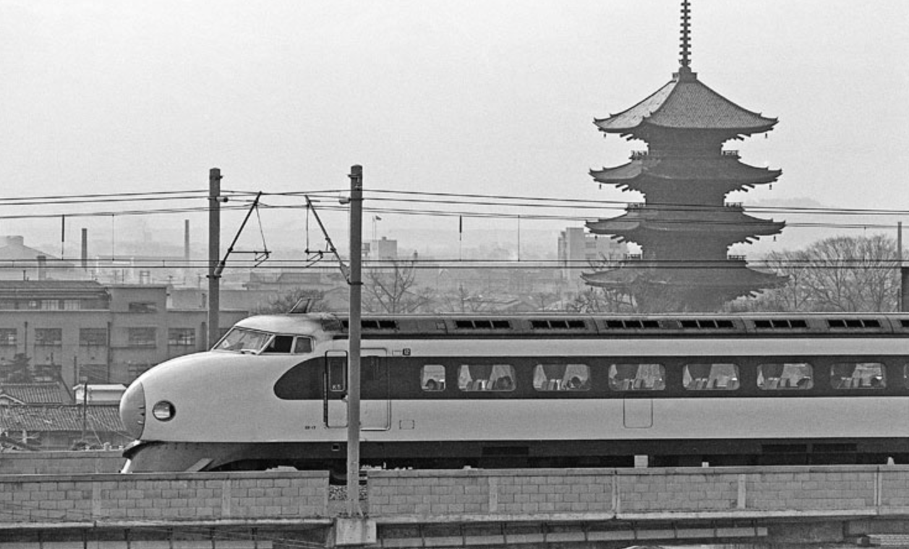
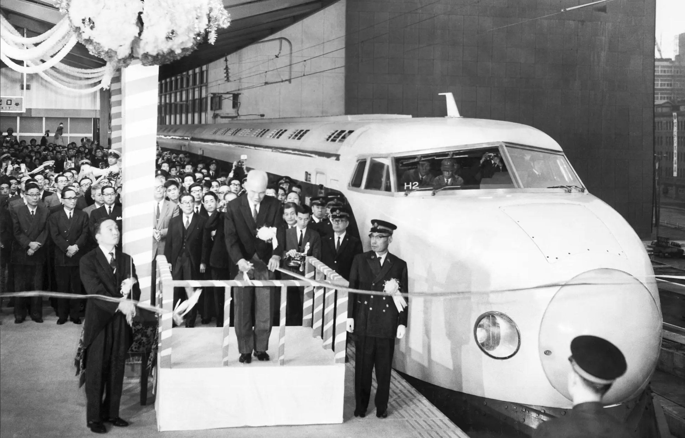
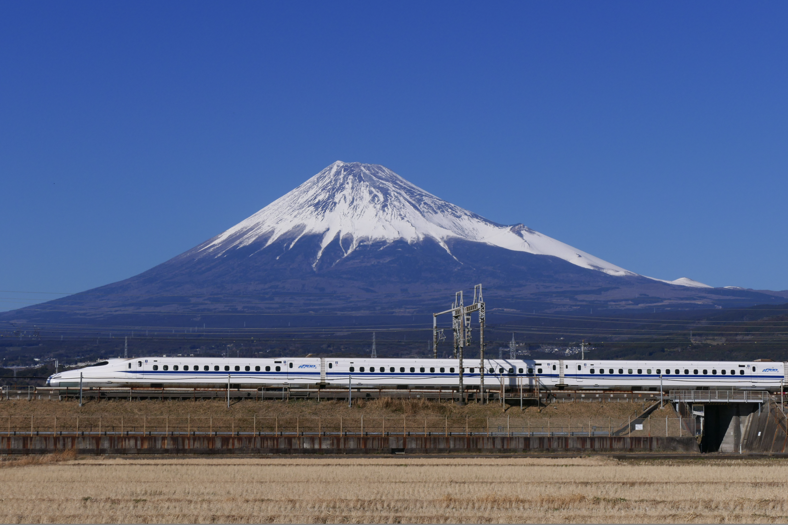
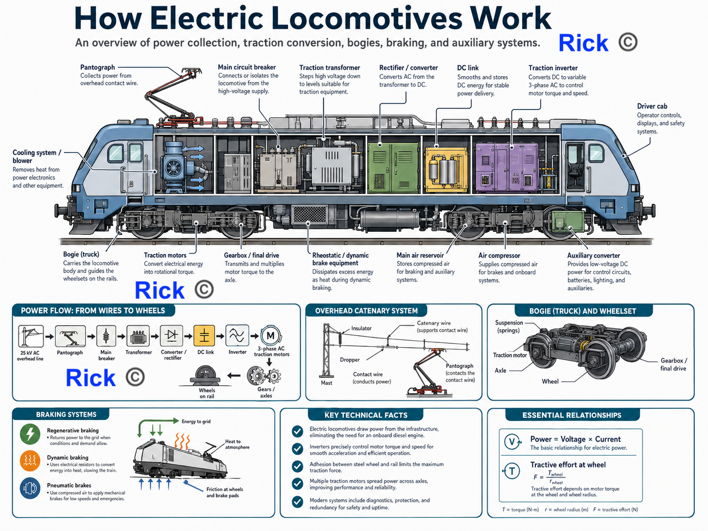
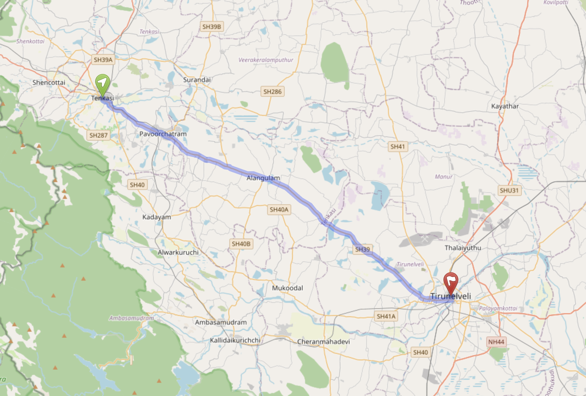
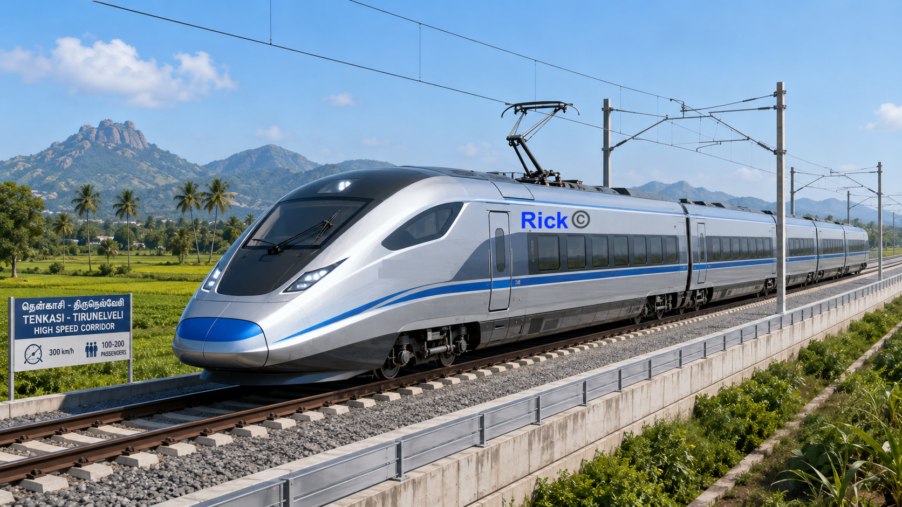
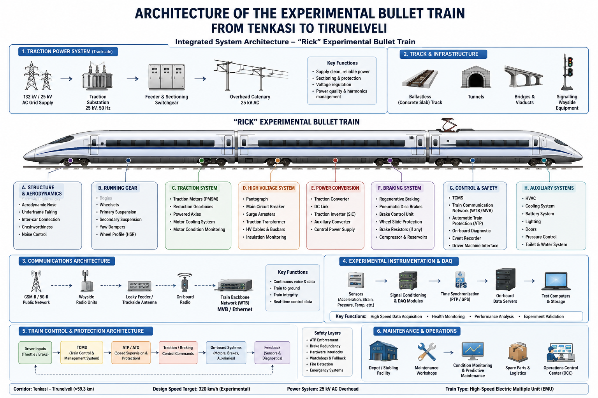
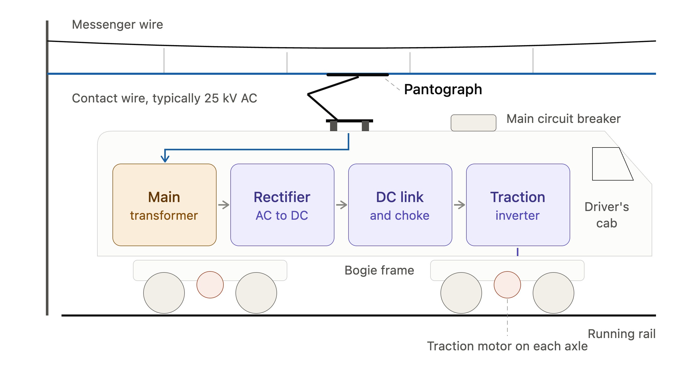
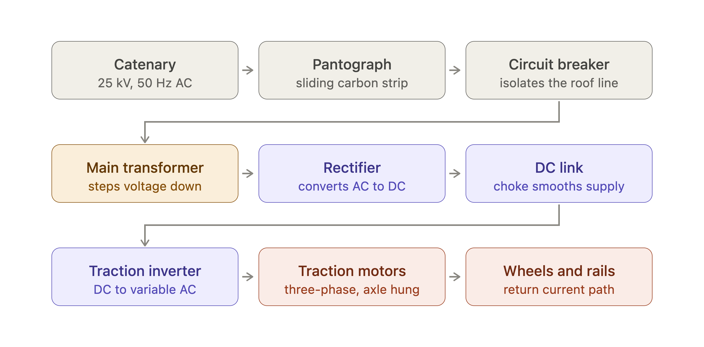
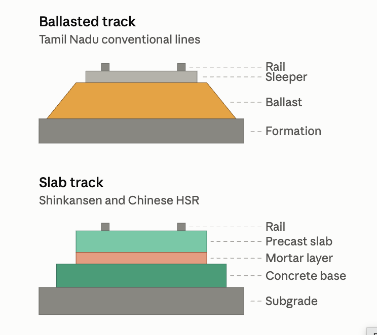

Bullet Trains in Tamil Nadu
Bullet Trains in Tamil Nadu: A Future
Firstly, to answer Why Bullet Trains are necessary? They are one of the fastest ways to connect big cities. They save large amount of time, offer higher capacity passengers, good safety and offer higher economic growth.
In South India, trains are one of the most preferred transportation instrument for longer distance travel. My own journey, I have travelled in all kinds of modes of transportation. I have travelled in AC Sleeper Bus, unreserved train, first class trains, first class airplane ticket, and so on.
Unfortunately, it is extremely uncomfortable traveling in unreserved train, cheaper mode of transportations as cheaper bus in Tamil Nadu, as the quality is poor, there’s no seats, you have to sit on the floor crammed with 100 people in a coach in unreserved trains. This makes me thankful and grateful that we as engineers and scientists could help improve quality of life for all, through our work, inventions and products.
I use Bullet train, informally. In this context, We use bullet train to mean high-speed trains, capable of reaching speeds of 300 km/h or above. We are not describing Maglev, magnetic levitation trains, that Japan’s SCMAGLEV that is capable of reaching speeds exceeding 375 mph in this post.
In this post, We’d be focusing on the feasibility of Bullet Trains and what impact it might bring. We’d be focusing on finances, engineering of Bullet Trains in this, along with sharing how others developed Bullet Trains across the Globe.
Early History of Bullet Trains
The experimental roots of modern high-speed rail reach back to the beginning of the twentieth century. These early vehicles established an engineering pattern that would later become fundamental, build prototypes, test them on controlled infrastructure, progressively increase the operating envelope, measure failures and limitations, and redesign.
Germany. In 1899, German electrical and industrial firms helped establish the Studiengesellschaft für elektrische Schnellbahnen (Research Association for High-Speed Electric Railways) to investigate whether electric traction could support railway operation at previously unprecedented speeds. Siemens identifies electrical engineer Walter Reichel as an important contributor to this programme; Reichel later taught electrical railway engineering in Berlin [1], [2].
Experimental three-phase electric railcars from Siemens & Halske and AEG were tested on the Marienfelde–Zossen military railway between 1901 and 1903. Speeds exceeded 160 km/h during the early experiments. By late October 1903, the Siemens vehicle had reached approximately 206.7 km/h, while an AEG vehicle subsequently achieved approximately 210.2 km/h [1], [3]. These experiments demonstrated remarkably early evidence that electric traction, suitably engineered track, power supply, and vehicle design could sustain speeds beyond 200 km/h.
Almost three decades later, German aircraft engineer Franz Kruckenberg designed the experimental propeller-driven Schienenzeppelin. On 21 June 1931, the vehicle reached approximately 230 km/h, establishing another railway speed record [4].
Spain. Spanish engineer Alejandro Goicoechea approached railway development from another engineering direction: reducing train mass. His experimental ideas emphasized a lightweight, articulated train in contrast with the heavy conventional railway vehicles of the period. On-track experiments began in 1941, followed by construction of the Talgo I prototype in 1942 [5].
Talgo itself describes the original concept as an articulated lightweight train using independent guided wheels. Many of these principles, particularly lightweight construction, articulation, low mass, and distinctive running gear, continued to influence subsequent generations of Talgo trains [6].
Japan. Japan’s path toward the Shinkansen also proceeded through progressively more ambitious experiments. Before the Shinkansen, Odakyu Electric Railway developed the lightweight 3000-series SE Romancecar. On 27 September 1957, an SE train reached 145 km/h during high-speed testing on the Tokaido Line between Kannami and Numazu, establishing what Odakyu records as a contemporary world record for narrow-gauge railway vehicles [7].
Japan then moved from experiments on the existing narrow-gauge railway toward an entirely new standard-gauge high-speed system. Prototype testing on the New Tokaido Line began in 1962. Japanese National Railways recorded that on 30 March 1963, a prototype train achieved 256 km/h on the dedicated test section [8].

This was a prototype programme allowed engineers to investigate high-speed rolling stock, track, electrification, braking, signalling, automatic train control, aerodynamics, and vehicle dynamics before commercial operation. The Tokaido Shinkansen opened on 1 October 1964, connecting Tokyo and Osaka and establishing the first modern high-speed railway system [9], [10].
France. France subsequently developed its own experimental high-speed programme. The TGV 001, introduced into testing in 1972, was an articulated experimental train powered by gas turbines driving electrical traction equipment. SNCF developed the train as a research platform for problems including traction, vehicle dynamics, braking, aerodynamics, suspension, and signalling [11].
On 8 December 1972, TGV 001 reached approximately 318 km/h. A later U.S. Federal Railroad Administration technical review reported that, by December 1974, TGV 001 had accumulated more than 16,000 km above 260 km/h and had completed more than 100 runs above 300 km/h [12].
The production TGV would ultimately abandon gas-turbine propulsion in favor of electric traction, but TGV 001 provided extensive experimental evidence about how articulated railway vehicles behaved at very high speeds.
The common lesson is modern high-speed rail emerged through cumulative experimental engineering rather than through a single invention. Germany explored high-speed electric traction; Spain emphasized lightweight articulated vehicle architecture; Japan combined prototype testing with a purpose-built high-speed railway; and France used experimental trains to systematically investigate the engineering limits of very-high-speed operation.
We truly stand on the shoulders of giants.
How did the Japanese learn the know-how?
Japan built institutional continuity in railway research, accumulated experimental knowledge over decades, and gradually integrated many specialized engineering disciplines into one railway system.
Japan established the Imperial Railway Agency’s Railway Research Center in 1907. The organization evolved through several institutional forms. It became the Railway Technical Research Institute associated with Japanese National Railways (JNR). This created a long-term institutional base in which railway knowledge could be accumulated, tested, documented, and transferred between generations of engineers [13].
Japanese engineers also experimented with increasingly faster trains before building the Shinkansen. On 27 September 1957, Odakyu’s lightweight 3000-series SE Romancecar reached 145 km/h during tests on the JNR Tokaido Line, establishing what Odakyu records as the contemporary world speed record for a narrow-gauge railway vehicle [7].
At the same time, Japanese railway researchers were already publicly discussing a much more ambitious railway. On 30 May 1957, the Railway Technical Research Institute held a public lecture in Tokyo titled A Newly-Projected Trunk Line Realizing the Dream, Tokyo to Osaka in Three Hours by Train. This shows that the Shinkansen emerged from research into an entirely new high-speed trunk railway system [13].
The technical problem was inherently multidisciplinary. High-speed rail required engineers to understand and integrate vehicle dynamics, traction systems, braking, track and structures, aerodynamics, vibration and noise, electrical power, signalling, communications, human factors, and safety. Japan’s Railway Technical Research Institute continues to organize railway research around many of these specialized disciplines, supported by dedicated experimental and testing facilities [14].
This institutional structure mattered because increasing train speed changes several engineering problems simultaneously. Vehicle stability becomes more sensitive to suspension and track geometry. Aerodynamic resistance and pressure effects increase, braking distances become longer. There’s also wheel-rail interactions that become more demanding. And then, there’s electrical power requirements increase. And signalling must operate safely at speeds where drivers cannot reliably respond to conventional lineside signals. High-speed rail therefore had to be developed as an integrated system, rather than simply as a faster locomotive [15].
The accumulated knowledge eventually contributed to the Tokaido Shinkansen, a purpose-built standard-gauge high-speed railway connecting Tokyo and Osaka. It opened on 1 October 1964 with a maximum operating speed of 210 km/h. The International Union of Railways identifies it as the world’s first high-speed rail system [15], [16].

The Japanese Engineers, Scientists were able to learn the accumulate know-how over time through experimentation, prototypes.
How Bullet Trains Work?
Modern High Speed trains can reach a speed of about 300 km/h or more (186 mph). The Japanese Shinkansen runs on conventional steel wheels and steel rails. A high-speed train’s propulsion system is an electromechanical energy-conversion system. During traction, it converts electrical energy from the overhead catenary into mechanical motion.

Image source: MaedaAkihiko, “Series-N700a-Mt.Fuji.jpg” [17]
The conversion path is
- Electrical energy from the overhead catenary
- Transformer and traction converter/inverter condition the power into controlled three-phase AC
- Traction motor uses electromagnetic forces to produce shaft torque
- Gearbox reduces speed and increases torque at the axle
- Axle and powered wheels rotate
- Wheel–rail adhesion converts wheel torque into tractive force
- Tractive force accelerates or maintains train motion against rolling resistance, aerodynamic drag, and gravity on grades
Electrical energy → traction motor → torque → gearbox → axle and wheels → tractive force → train motion
Electrical power is supplied to the train’s traction motors. The motors convert electrical energy into rotational mechanical power and torque. A gearbox transfers this torque to the axles and wheels. As the powered steel wheels rotate against the steel rails; wheelrail adhesion produces the tractive force that accelerates the train forward.
The basic propulsion chain is therefore:
- Electric motor
- Gearbox
- Axle and wheels
- Steel rail
- Energy
- Capacity to do work; measured in joules (J). For electricity billing, it is often expressed in kilowatt-hours (kWh).
- Power
- Rate at which energy is transferred or converted; measured in watts (W), where 1 W = 1 J/s.
- Torque
- Rotational turning effect; measured in newton-metres (N·m)
- Tractive force
- Forward force transmitted at the wheel–rail contact that accelerates, the train or counteracts resistive forces; measured in newtons (N)
1. Where does the train get its Electricity?
The train receives electricity through the railway traction-power system. So the flow of electricity goes like this: Utility grid → traction substation → overhead catenary → pantograph → onboard electrical equipment
The traction substation converts grid electricity into the supply required by the railway. On the Tokaido Shinkansen, the overhead catenary supplies approximately 25 kV single-phase AC [18], [19].
A roof-mounted pantograph slides against the overhead contact wire and transfers electrical current into the train. At high speed, the pantograph and catenary must maintain stable contact, loss of contact can cause electrical arcing, while excessive contact force increases mechanical wear [20].
2. How does electricity turn the Wheels?
As shared in earlier section, Bullet Train is an electromechanical energy-conversion system. So, inside the train, the incoming electrical power passes through several conversion stages.
It passes like this, 25 kV AC → transformer → converter → DC link → inverter → three-phase AC → traction motor
The transformer reduces the incoming voltage. The converter changes AC into DC. The inverter produces controlled three-phase AC for the traction motors [18].
We want to describe relationship between mechanical power, torque and rotational speed. We use rotational power to describe them. We want to be reminded that Power is a measure of the rate at which work is done. So, the traction motor converts electrical power into rotational mechanical power.
\[ P = \tau \omega \]
where \(P\) is power, \(\tau\) is torque, and \(\omega\) is rotational speed.
A reduction gearbox transfers motor torque to the axle and wheels. Modern Shinkansen trains use distributed traction, with powered axles located throughout multiple cars rather than concentrating propulsion in one locomotive [18].
3. How does the steel wheels move the train?
The wheels move the train through wheel–rail adhesion. When motor torque rotates a powered wheel, the wheel applies a tangential force backward against the rail. The rail applies an equal and opposite force forward on the wheel, producing the tractive force that accelerates the train.
The Highest push or pull force, a vehicle can apply to the ground, before the wheels start to slip is called, Maximum usable tractive force.
The maximum usable tractive force is approximately:
\[ F_{\text{adh}} \leq \mu N \]
where \(\mu\) is the effective wheel–rail adhesion coefficient and \(N\) is the normal load carried by the powered wheels.
Rain, snow, contamination, or excessive motor torque can reduce adhesion. It could cause wheel slip during acceleration or wheel slide during braking [21].
4. How does the train stay stable at 300 km/h?
An important issue that many railway engineers faced in early development of high speed trains is hunting oscillation[22]. Hunting oscillation is self-excited, side to side, and twisting motion of train’s wheelsets or bogie that happens after a critical speed. This was caused due to conical wheels, momentum lag, overshooting of wheels from one rail to other in a rhythmic, snake like pattern, that grows stronger. So this is solved by introducing advanced bogies, increased suspension design, track engineering and aerodynamics.
Each carbody is supported by bogies containing wheelsets, suspension, damping systems, brakes, and other running gear. High-speed trains are designed so that the critical hunting speed remains safely above the intended operating range.
5. How does a bullet train stop?
A Bullet train is travelling at speeds of over 300 kmp/h, and it is important we have a safe way to stop it. Before we answer how it stops, we need to understand Kinetic energy. It’s because a moving bullet train contains a very large amount of energy. And stopping the train means removing that energy.
Kinetic energy is the energy an object has because it is moving. If an object stands still, it has zero kinetic energy, The moment it starts moving, it gains kinetic energy. Mass is how heavy or large an object is. A heavier object has more kinetic energy than a lighter object moving at the same speed. Speed is how fast the object moves. Moving faster gives an object much more kinetic energy.
A moving train contains kinetic energy:
\[ E_k = \frac{1}{2}mv^2 \]
Because kinetic energy increases with the square of speed. The braking from 300 km/h requires removing a very large amount of energy. The Shinkansen combines Regenerative Braking and Friction braking.
During regenerative braking, the traction motors operate as generators, converting mechanical energy back into electrical energy that can be returned to the traction-power system [18]. Mechanical disc brakes supplement regenerative braking when required, while wheel-slide protection regulates braking force to prevent loss of wheel–rail adhesion.
6. Why Does Aerodynamics Matter at High Speed?
Aerodynamics simply means how much air moves and how forces act on solid objects passing through it. At higher speed, the bullet train starts to experience air resistance, that increases rapidly. When it increases, the bullet train will require more power to push the vehicle forward, and maintain control.
The bullet train experiences Aerodynamic drag at higher speed. It’s the force that resists the bullet train’s motion through air. We want to describe this Drag, which depends on speed, air, object’s size (bullet train) and it’s aerodynamic shape. So, In non-technical way, we can describe drag is equal to half of air density, times speed square, times size and shape factor. To summarize, Air resistance depends on how dense the air is, how fast you move through it, how large a target you present to the air, and how streamlined your shape is.
So, Aerodynamic drag can be approximated by: \[ F_d = \frac{1}{2}\rho C_d A v^2 \]
where \(\rho\) is air density, \(C_d\) is drag coefficient, \(A\) is frontal area, and \(v\) is train speed.
Because drag increases approximately with \(v^2\), the power required to overcome aerodynamic drag rises approximately with:
\[ P_d \propto v^3 \]
High-speed trains therefore use streamlined noses, smooth carbodies, carefully designed inter-car regions, optimized pantographs, and controlled underfloor equipment[23].
Tunnel entry also generates pressure waves because the train rapidly compresses the air ahead of it. These pressure waves, aerodynamic noise, crosswinds, and drag become major engineering constraints at high speed [23].
7. How does the train know how fast it may Travel?
At 300 km/h, a driver cannot safely rely only on conventional lineside signals.
The Shinkansen therefore uses automatic train-control and train-protection systems. Track circuits detect train occupancy and have historically also transmitted permissible-speed information to the train [24].
The onboard system continually evaluates Actual speed → permitted speed → required braking. If the train approaches a lower-speed section or exceeds the permitted speed envelope, the control system can automatically command braking [24].
8. How does all of this work together?
A bullet train is an integrated engineering system of following sub-components
Power supply
→ pantograph
→ transformer and power electronics
→ traction motors
→ gearbox and wheels
→ wheel–rail adhesion
→ bogies and suspension
→ track
→ braking
→ aerodynamics
→ signalling and train protection
Each subsystem constrains the others.
Higher speed is unsafe if vehicle dynamics become unstable. Strong braking cannot be fully used if the wheels lose adhesion. Even an advanced train cannot safely operate at 300 km/h without sufficiently precise track and train-protection systems.

A bullet train is an integrated system of electrical, mechanical, aerodynamic, structural, track, braking, and signalling technologies. Each subsystem constrains the others: higher speed is unsafe if vehicle dynamics become unstable, strong braking is limited if adhesion is poor, and even an advanced train cannot safely operate at 300 km/h without highly accurate track, reliable power collection, and continuous train-protection systems [18], [25].
Bullet Trains in Tamil Nadu
Tamil Nadu has a population of roughly 77 million people. The state has substantial engineering and manufacturing base [26], [27]. Therefore, I encourage the engineers, scientists of the state to work on advanced technology products. The state already has industrial capability in automobiles, heavy machinery. It also has electrical equipment, electronics, software, and engineering research and development.
Chennai is also home to the Integral Coach Factory, one of Indian Railways’ principal passenger rolling-stock manufacturing facilities. [27], [28]. Therefore, the state has resources, substantial foundation to consider building Bullet train. However, high-speed rail is substantially more demanding than conventional railway manufacturing. In my view, it is achievable, what is required is political will at state and central level, visionary leadership, engineers and scientists to work together. As shared earlier, a high-speed railway is an integrated engineering system involving rolling stock, track and civil structures, traction power, power electronics, braking, vehicle dynamics, aerodynamics, signalling, telecommunications, operations, safety, testing, and maintenance [29], [30].
So the question for the state would be, how can Tamil Nadu progressively acquire the technical know-how required to design, build, test, validate, and eventually operate its own high-speed railway system? In my proposal developed here is experimental rather than immediately commercial. The first objective would not be to construct an entire high-speed railway network. It would be to develop and demonstrate the underlying engineering capability through a controlled prototype programme.
A simplified development path might be similar to this path. The theoretical programme would proceed through the following stages.
- Engineering requirements
- Component design and testing
- Subsystem testing
- Prototype train development
- Experimental track construction or access
- Low-speed trials
- Progressively higher-speed trials
- Integrated safety testing
- Repeated end-to-end operation
- Technical and economic evaluation
This type of staged development is important because the bullet train requires more than validation by testing the train alone. It requires the vehicle, track, electrical supply, signalling, braking, communications, operating procedures, maintenance system all ultimately function together as one integrated railway system [30].
Japan’s development of the Shinkansen similarly involved accumulated railway research, experimental vehicles, dedicated testing, and progressive integration of multiple engineering disciplines before commercial operation [25].

The following Tenkasi–Tirunelveli concept is therefore treated as an experimental engineering programme: a way to examine what components, infrastructure, laboratories, personnel, testing procedures, costs, and technical knowledge would be required to demonstrate a working high-speed railway system in Tamil Nadu.
Before going further, one constraint has to be stated plainly. Railways are a Union subject under Entry 22 of the Seventh Schedule1. Tamil Nadu cannot build, own or operate a railway on its own, and it has no jurisdiction over the Southern Railway alignment discussed later in this post. Anything proposed here would require the Ministry of Railways as a partner.
Experimental First Prototype: Tenkasi to Tirunelveli
The proposed Tenkasi–Tirunelveli system is considered here as a research and engineering test programme rather than as an immediate commercial railway.
The objective of the first prototype would be to demonstrate whether a complete high-speed-rail system can be designed, integrated, instrumented, tested, and operated repeatedly under controlled conditions.

Tenkasi to Tirunelveli is only about 71.1 kms. This is a short distance, also familiar with me. It is why, I am choosing this location.
The first step is to show repeatability, whether Tamil engineers, scientists can successfully reliability move 100-200 passengers from Tenkasi to Tirunelveli at 300 kmp/h.
What must be built?
The bullet train has components that are specified around the performance requirements of the complete vehicle. For the first step, it is experimental, so our specifications are mostly around viability of it. For the Tenkasi-Tirunelveli experimental Bullet Train, the principal onboard systems would include:
- carbody and aerodynamic structures,
- bogies, wheelsets and suspension,
- traction motors and gearboxes,
- pantograph and high-voltage equipment,
- transformer, converters and inverters,
- regenerative and friction braking,
- train-control and communication systems,
- automatic train protection,
- auxiliary electrical and thermal systems,
- experimental instrumentation and data acquisition.
The following table identifies representative subsystems and existing industrial technologies that could be studied as engineering references. These are reference architectures rather than a procurement specification.

Components Required for the Experimental Bullet Train
The experimental bullet train would be a conventional steel-wheel high-speed electric multiple unit. The following is pre-planning reference list. Practically, during production, we might require more components. We focus on crucial components that is required. The components cannot be selected independently, the carbody, bogies, traction motors, power electronics, braking, control systems, aerodynamics, and track interface must be engineered around the requirements of the complete vehicle.
All these could be theoretically made locally within Tamil Nadu or broader India. The reason is the basic fundamental know-how exists, and capabilities can be developed.
The table below identifies the principal onboard hardware and representative commercial technologies that could be used as engineering references. The manufacturer and model names are reference architectures rather than a proposed procurement list.
| System | Component | Reference Manufacturer / Model | Function |
|---|---|---|---|
| Structure | Carbody | Nippon Sharyo / Hitachi: N700S reference Lightweight high-speed EMU architecture | Carries passengers and equipment while resisting structural, fatigue and aerodynamic loads. |
| Running Gear | Bogies | Shinkansen high-speed bogie reference Final design must match vehicle mass, wheel profile and track geometry | Supports the carbody and controls wheel guidance, suspension, ride quality and high-speed dynamic stability. |
| Running Gear | Wheelsets | Shinkansen-type forged wheelset Project-specific wheel profile, axle and bearings | Transfers vehicle loads to the rail and transmits traction and braking forces through the wheel–rail contact region. |
| Running Gear | Primary & Secondary Suspension | N700S / modern HSR reference Primary suspension + secondary air suspension + dampers | Controls vibration and relative motion between the wheelsets, bogies and carbody in the vertical, lateral, roll and yaw directions. |
| Running Gear | Yaw Dampers | High-speed bogie damping system Project-specific damping characteristics | Controls excessive bogie yaw motion and contributes to stability against high-speed hunting oscillation. |
| Traction | Traction Motors | Siemens Mobility: MoComp / N700S PMSM reference High-power rail traction motor architecture | Converts controlled three-phase electrical power into rotating mechanical torque. |
| Traction | Reduction Gearboxes | Siemens Mobility: MoComp Gear Unit Project-specific reduction ratio and torque rating | Reduces motor rotational speed and transfers increased torque to the powered axle. |
| High Voltage | Pantograph | Stemmann-Technik: DSA 380 High-speed pantograph reference | Maintains sliding electrical contact with the overhead contact wire while the train is moving at high speed. |
| High Voltage | Main Circuit Protection | Railway-qualified high-voltage switchgear Main breaker, surge arresters, isolation and grounding | Protects the train from electrical faults and allows the high-voltage traction circuit to be safely isolated. |
| Traction | Main Traction Transformer | Hitachi Energy: High-Speed Traction Transformer Rating selected from complete train power requirements | Steps down the incoming high-voltage AC supply to voltage levels required by the traction power electronics. |
| Traction | Traction Converter | Siemens Mobility: MoComp Traction Converter High-power railway converter reference | Converts and regulates the transformer output for the intermediate DC traction circuit. |
| Traction | DC Link | Integrated traction package Busbars, capacitors, filters and protection | Provides the intermediate DC electrical stage between the converter and traction inverter. |
| Traction | Traction Inverter | N700S SiC / Siemens MoComp reference Modern SiC traction architecture | Converts DC power into variable-frequency, controlled three-phase AC for the traction motors. |
| Braking | Regenerative Braking | Integrated traction-control function Motor + inverter + converter + brake-control software | Operates traction motors as generators, converting vehicle kinetic energy back into electrical energy. |
| Braking | Mechanical Disc Brakes | Knorr-Bremse: Shinkansen disc-brake reference Reference from Japanese high-speed train applications | Provides friction braking when regenerative braking is unavailable or insufficient, and during low-speed or emergency braking. |
| Braking | Brake Control / Wheel-Slide Protection | Knorr-Bremse railway brake-control architecture Electronic brake control and wheel-slide protection | Coordinates regenerative and friction braking and reduces brake force when wheel–rail adhesion is being exceeded. |
| Pneumatics | Compressed-Air System | Knorr-Bremse railway pneumatic system Compressor, dryer, reservoirs, valves and piping | Supplies compressed air for friction braking, air suspension and other pneumatic equipment. |
| Control | Train Control & Management System | Selectron / railway TCMS reference architecture Project-specific systems integration required | Coordinates traction, braking, auxiliaries, diagnostics and communication between train subsystems. |
| Control | Train Communication Network | Railway Ethernet / IEC 61375 reference Vehicle communication backbone | Provides deterministic digital communication between controllers, sensors and distributed train equipment. |
| Control | Speed & Position Sensing | Railway-qualified sensor package Axle encoders + IMU + GNSS + track references | Measures speed, acceleration and position for traction control, braking, testing and train protection. |
| Safety | Automatic Train Protection | High-speed ATP reference architecture Fail-safe speed supervision and braking enforcement | Supervises permitted speed and automatically commands braking if safe operating limits are exceeded. |
| Auxiliary | Auxiliary Electrical Supply | Rail-qualified auxiliary converter + battery system Project-specific architecture | Powers computers, pumps, compressors, lighting, control equipment and emergency electrical loads. |
| Thermal | Cooling System | Integrated rail thermal-management system Liquid and/or forced-air cooling | Removes heat generated by motors, converters, inverters, transformers and control electronics. |
| Passenger | HVAC & Pressure Control | High-speed railway HVAC reference Pressure-control requirements determined from corridor design | Controls temperature and ventilation and manages passenger-compartment pressure variations. |
| Aerodynamics | Nose, Fairings & Underbody | N700S aerodynamic architecture Final experimental train geometry requires CFD and physical testing | Reduces aerodynamic drag, pressure disturbances, crosswind sensitivity and high-speed aerodynamic noise. |
| Experimental | Instrumentation | Research-grade sensor package Acceleration, strain, force, pressure, temperature and electrical measurements | Measures mechanical, electrical and aerodynamic behaviour during prototype testing. |
| Experimental | Data Acquisition System | Synchronized high-rate research DAQ Sampling architecture determined from test requirements | Records synchronized engineering measurements from the experimental vehicle during each test run. |
| Experimental | Instrument Racks | Custom railway test racks Shock- and vibration-qualified mounting | Houses DAQ equipment, test computers, communication hardware and experimental electronics. |
Reference note:
The manufacturer and model entries above are engineering reference examples rather than a finalized procurement list. High-speed railway equipment is normally engineered and integrated around complete vehicle requirements. The N700S traction system provides a useful reference for distributed traction, SiC power electronics and regenerative braking [18]. Stemmann-Technik’s DSA 380 provides a high-speed pantograph reference [31], while Hitachi Energy and Siemens Mobility provide examples of railway traction transformers, motors, converters and gear units [32], [33], [34], [35]. Knorr-Bremse provides a useful reference for high-speed friction-brake technology used on Japanese Shinkansen trainsets [36].
System Integration: How the Components Work Together
Recall earlier, bullet train is fundamentally an electromechanical energy-conversion system. The train receives electrical energy from the power grid and ultimately converts that energy into mechanical motion. But this conversion does not happen in one step. It takes place through a sequence of tightly integrated electrical, mechanical and control subsystems.

The subsystems depends on each others. Electrical power must be converted into motor torque, motor torque must become force at the wheels, the vehicle structure must safely carry the resulting loads, and the control system must coordinate the entire process in real time. The propulsion system consists of three tightly coupled layers: electrical power conversion, mechanical transmission, and control.
Electrical power is collected from the overhead catenary by the pantograph and passed through high-voltage protection and the traction transformer. Power electronics then regulate the supply through the line-side converter, DC link and traction inverter before delivering controlled three-phase AC power to the traction motors. The traction motors convert electrical power into rotational torque. The gearbox transfers this torque to the axle and wheelset, where wheel–rail adhesion converts wheel torque into longitudinal tractive force and accelerates the train.

In simplified form, it works this way, Electrical energy → power electronics → motor torque → wheel torque → tractive force → vehicle motion
The N700S provides a modern example of this architecture, including distributed traction, advanced power electronics, traction motors and regenerative braking [18].
At the same time, the vehicle structure carries dynamic loads from the rail through the wheelsets, primary suspension, bogies and secondary suspension into the carbody. These components control wheel guidance, vibration, ride quality and high-speed stability.
A train-control system closes the loop. Sensors continuously measure speed, wheel rotation, acceleration, motor current, braking conditions, temperature and subsystem status. Controllers use these measurements to regulate traction torque, braking, wheel slip, equipment limits and safety functions.
The bullet train requires to be an integrated system in which electrical power, mechanical dynamics and control software operate together. The main engineering challenge is not the individual components, but their system-level integration.
Experimental High-Speed Train: Integrated System Architecture by Rick
Reference architecture for a conventional 25 kV AC steel-wheel high-speed electric multiple unit
PRIMARY ENERGY & PROPULSION FLOW
01 Traction Power Grid + Traction Substation
02 Power Collection Overhead Catenary + Pantograph
03 High-Voltage Protection Main Circuit Breaker + Surge Protection
04 Voltage Conversion Main Traction Transformer
05 Traction Electronics Converter + DC Link + Inverter
06 Traction Motor Electrical Power → Mechanical Torque
07 Drivetrain Gearbox + Axle + Wheelset
08 Wheel–Rail Interface Wheel Torque → Tractive Force
VEHICLE DYNAMICS & LOAD PATH
Rail Track Geometry & Excitation
Wheelset Wheel–Rail Contact
Primary Suspension Wheelset ↔︎ Bogie
Bogie Guidance & Dynamic Stability
Secondary Suspension Bogie ↔︎ Carbody
Carbody Ride Quality & Passenger Environment
CONTROL, PROTECTION & FEEDBACK
Automatic Train Protection Permitted Speed • Overspeed Protection • Emergency Intervention
Train Control & Management System Supervisory Coordination • Diagnostics • Equipment Management
Traction Control Motor Torque • Inverter Control • Wheel-Slip Management
Brake Control Regenerative Braking • Friction Braking • Wheel-Slide Protection
Vehicle Sensors Speed • Acceleration • Force • Pressure • Temperature • Current • Voltage
Experimental DAQ Synchronized Measurement • Logging • Engineering Analysis
BRAKING ENERGY FLOW
Vehicle Kinetic Energy Moving Train
Wheelsets Mechanical Rotation
Traction Motors Generator Mode
Power Electronics Regenerative Electrical Energy
Traction Power Network Energy Returned When Network Is Receptive
Friction Brakes Disc + Caliper + Pneumatic Actuation
COMPLETE SYSTEM INTEGRATION
How electrical power, mechanical dynamics, control and feedback operate as one machine
01 Motion Command Requested Speed, Acceleration or Braking
02 Control & Protection TCMS + ATP + Traction + Brake Control
03 Electrical Power Control Transformer + Converter + DC Link + Inverter
04 Electromechanical Conversion Traction Motor + Gearbox + Axle
05 Wheel–Rail Force Traction + Adhesion + Braking
06 Vehicle Response Acceleration + Speed + Vehicle Dynamics
Physical Vehicle Motors • Gearboxes • Wheelsets • Bogies • Suspension • Brakes • Carbody
Measured Vehicle State Speed • Acceleration • Wheel Slip • Force • Current • Voltage • Temperature
Sensor Feedback The measured response is continuously returned to the control system
CLOSED-LOOP OPERATING PRINCIPLE
Command Desired Vehicle Motion
Controller Calculate Traction or Brake Demand
Power System Regulate Electrical Energy
Actuation Motor Torque or Brake Force
Train Motion Acceleration, Speed or Deceleration
Sensors Measure Actual Vehicle Response
Feedback Correct the Next Control Command
Integrated operating principle:
A requested change in train motion is first interpreted by the control and protection systems. The traction-control or brake-control system determines the required actuator command while respecting electrical, adhesion, thermal and safety limits.
During acceleration, the power-electronic system regulates electrical energy supplied to the traction motors. The motors convert this electrical energy into mechanical torque, which is transmitted through the gearbox, axle and wheelset to the wheel–rail interface. The resulting tractive force accelerates the train.
The bogies, suspension and carbody simultaneously respond to the mechanical forces generated by the track and vehicle motion.
Sensors continuously measure the resulting physical state of the train. These measurements are returned to the control system, which compares the actual response with the requested response and adjusts traction or braking commands accordingly.
During braking, the same integrated architecture operates in reverse. The traction motors can operate as generators, converting part of the vehicle’s kinetic energy back into electrical energy, while friction brakes provide additional braking force when required.
The experimental high-speed train therefore operates as a closed-loop electromechanical system in which electrical energy conversion, traction, braking, vehicle dynamics, sensing, protection and control function together as one integrated machine.
Railway Track for the Experiment
In this section, We answer the question about gauge. One question that we might have is that, do we need to replace entire gauge or install new lines. For the Tenkasi–Tirunelveli railway is approximately 71.1 route-km and uses 1,676 mm Indian broad gauge.
Southern Railway’s published sectional-speed table lists the section at approximately 70 km/h [37]. The Operation at 300–320 km/h would therefore might require major reconstruction of the vehicle–track system.
However, We can notice that the existing gauge need not automatically be replaced. Russia’s Sapsan provides an important example for us. Siemens adapted its Velaro high-speed platform to Russia’s broad-gauge railway, meeting national train-control system, electrical infrastructure and environmental requirements [38]. So, this demonstrates that high-speed rolling stock can be engineered around an existing national gauge.
For Tenkasi–Tirunelveli, We’d have to survey, and figure out, how much of the suitable sections could be reconstructed with continuously welded rail, high-precision track geometry, high-speed fastenings, improved formation, upgraded electrification and automatic train protection. Geometrically constrained sections might require new curves, bypasses or dedicated high-speed segments. India’s Mumbai–Ahmedabad High-Speed Rail project provides a domestic reference for 320 km/h infrastructure. Its Japanese-derived J-Slab system uses precisely constructed ballastless track, continuously welded rail and high-speed fastening systems [39].
Broad Gauge or Standard Gauge?
Gauge alone does not determine maximum railway speed. High-speed performance depends on the complete vehicle–track system: wheel–rail geometry, bogie dynamics, suspension, axle load, track stiffness, curve radius, cant, aerodynamics, electrification, signalling and maintenance tolerances. International Union of Railways also covers wider-than-standard-gauge track structures for passenger speeds extending to 350 km/h [40].
The experimental programme could consider evaluating both 1,676 mm broad gauge and 1,435 mm standard gauge as system architectures.
Broad gauge would preserve compatibility with Indian railway engineering and allow the programme to investigate how far existing infrastructure can be adapted. Standard gauge offers access to a much larger ecosystem of proven 300–350 km/h rolling stock and track technology. India’s Mumbai–Ahmedabad HSR project follows this approach with standard-gauge track and Japanese Shinkansen technology [39], [41].

In addition to selecting track gauge, the experimental programme requires the track-support structure. Conventional Indian railway lines predominantly use ballasted track, in which sleepers are supported by compacted stone ballast. Modern high-speed railways increasingly use rigid slab-track systems, particularly on viaducts, tunnels and dedicated high-speed alignments, because they provide more stable track geometry and reduce the frequency of alignment maintenance at very high speeds. The choice between ballast and slab track is distinct from the choice between broad gauge and standard gauge.
Finance and Engineering Team
The experimental programme can be deliberately small. It does not require commercial stations, large passenger terminals, extensive viaducts or a fleet of trains. The objective is to construct one instrumented prototype train and enough controlled railway infrastructure to demonstrate repeatable bullet train operation.
India’s RDSO high-speed test track in Rajasthan provides a useful reference. The approximately 59 km dedicated broad-gauge test facility is being developed for ₹967.07 crore. It is intended to support rolling-stock trials at speeds up to 220 km/h [42].
The proposed Tamil Nadu experiment could be much smaller in scope. It would rely heavily on existing railway land, workshops, laboratories, locally manufactured components and only the minimum length of upgraded or purpose-built test track required for validation.
A preliminary target budget of approximately ₹50–70 crore 2 could therefore be used for the first experimental phase. The figure could be comparable to wedding budget of one or few wealthy tamils. With this amount, we would cover one prototype trainset, limited test-track modification or construction, traction-power equipment, control and safety systems, instrumentation, data acquisition and prototype manufacturing. The figure should be treated as a cost-constrained engineering target rather than a formal project estimate.
The core technical organisation could consist of approximately 20–50 engineers, scientists and technicians together. The required expertise would include systems engineering, vehicle dynamics, mechanical design, track engineering, traction motors, power electronics, electrification, braking, aerodynamics, signalling, embedded control, functional safety, instrumentation and experimental testing. Additional fabrication, construction and specialist personnel could be contracted only during specific development phases. The purpose of the first programme is to demonstrate that a small multidisciplinary engineering team can design, integrate, instrument and repeatedly operate one complete experimental high-speed railway system within a tightly controlled budget.
Tamil Nadu’s existing capabilities
ICF Chennai. The Integral Coach Factory in Perambur is one of the largest rolling-stock manufacturers in the world and is where the Vande Bharat trainsets: India’s 160–180 km/h semi-high-speed EMUs, were designed and built. That is carbody fabrication, propulsion integration, and EMU systems engineering, already inside Chennai. The gap between 180 km/h and 300 km/h is large, but this could be reduced.
An engineering education base. IIT Madras, Anna University, NIT Trichy and hundreds of engineering colleges produce mechanical, electrical, civil and software engineers at scale. What is missing is not graduates. It is a railway specific apprenticeship, a place where a young engineer can spend five years learning why a bogie hunts. Further more, there are plenty of engineering colleges all across Tamil Nadu, where from first to final year undergraduates could be hired to build the know-how slowly over time.
An embedded and software industry. The TCMS, diagnostics, and test-data infrastructure of a modern train is largely software. Tamil Nadu’s existing electronics and software workforce can be retrained to railway safety-critical standards faster than a railway workforce can be built from scratch.
MAHSR spillover. India is currently absorbing Shinkansen know-how from the Mumbai–Ahmedabad project includes a dedicated High-Speed Rail Training Institute at Vadodara, built to train Indian engineers and operators on Japanese high-speed practice. Those trained people are a national resource Tamil Nadu can recruit from and build upon.
How can Tamil Scientists and Engineers gain on building Know-How?
This is one of the hardest tasks, as our engineers, scientists trained in Tamil Nadu do not have the know-how, domain understanding. However, it is certainly possible to learn them, acquire over time, patience, perseverance if the leadership cultivates the environment.
Every nation that has high-speed rail today acquired the knowledge the same way, in the same order:
License and build under supervision. Japan itself began railway electrification by licensing European technology; China’s CRH programme began by assembling Shinkansen, Siemens, Alstom and Bombardier designs under technology-transfer contracts. The first experimental bullet trainset should be built with a foreign OEM, with Tamil engineers embedded in every design review.
Send engineers to the source. Not managers, engineers. Two to three years inside an OEM’s bogie, traction, and test departments, with a contractual right to that placement written into the procurement. This can start from early undergrad in engineering colleges through a recruitment program in Tamil Nadu.
Instrument everything and keep the data. The experimental line requires data-collection, progress-update, cumulative accumulation of know-how, this will enable generations of engineers to learn the know-how, protect the domain knowledge of how to build them in the future, without losing vital techniques, understanding.
Localize component by component. Brakes, then converters, then motors, then bogies, in rising order of difficulty, each localized only after the imported version has been operated, maintained, and fully understood.
Institutionalize it. A Permanent Tamil Nadu High-Speed Rail Research Centre, jointly run with a university and ICF, so the knowledge survives the individuals and the election cycles.
Conclusion
Looking further into the future, it is possible to ask how this advanced technology might continue to be developed. Theoretically, considering if the Bullet Trains were implemented in Tamil Nadu. It is possible for further development of the Bullet trains which can touch up to 600+ km/h in a decade or so.
The economic, social, financial benefits might be immense. A trip from Kanyakumari to Chennai might take only 1 hour and 20 minutes. This might have indirect benefits on real-estate sector as well for people. So the most immediate benefit is time savings. Increased business activity, development and property values around stations can expand government tax bases. Someone living outside a major metropolitan area may suddenly have practical access to specialized hospitals, universities, job market, cultural events.
The purpose of this theoretical proposal is to encourage the development of advanced technologies in Southern India. In particular, Tamil Nadu, Andhra, Telangana together has more than 1000+ engineering colleges and have the required human capital. Therefore, Tamil Nadu possibly could construct an experimental 320 km/h railway between Tenkasi and Tirunelveli. The encouragement is that bullet train capability can be developed through a deliberate experimental programme.
The first product would be developing the engineering knowledge, from vehicle-dynamics data, traction and braking expertise, track-design capability, high-speed power collection, signalling, safety validation, manufacturing processes and engineers who have learned how these systems interact.
Across the globe, Germany, Japan, France and Spain developed bullet train rail through decades of experimentation. India now possesses a much larger industrial and engineering base than those early programmes began with. The state of Tamil Nadu possesses rolling-stock manufacturing, automotive engineering, electronics, software, universities and industrial suppliers on which such a programme could build.
Therefore, it is possible to develop capabilities for building advanced technologies, which can be systematically acquired, tested and accumulated. If that technical-knowledge is systematically developed and retained, an experimental bullet train can be turned into production. It can also serve as a skill creating experimental laboratory for developing the necessary engineers, technologies and industrial capabilities required for increasingly advanced technological products in Tamil Nadu and India.
References
{kind=link}
Footnotes
Entry 22 of List I covers railways generally. State involvement normally proceeds through joint-venture SPVs with the Ministry of Railways, state cost-sharing on land and utilities, or funding of research and manufacturing rather than direct construction.↩︎
Many might push back on the budget approximation. For experimental, short demonstration, these are approximations only. India can build advanced technologies cheaper for sure; and also of high quality.↩︎